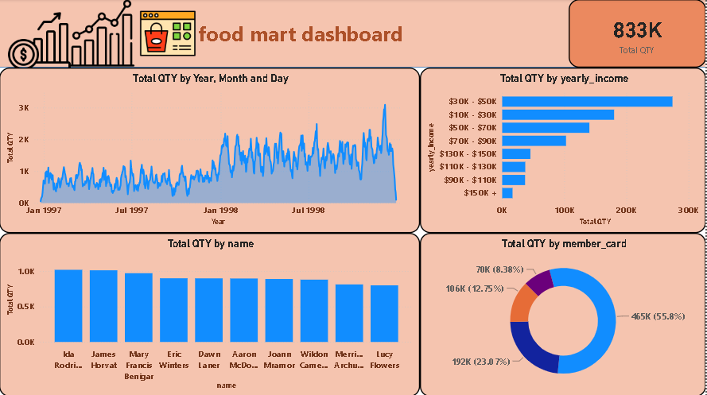
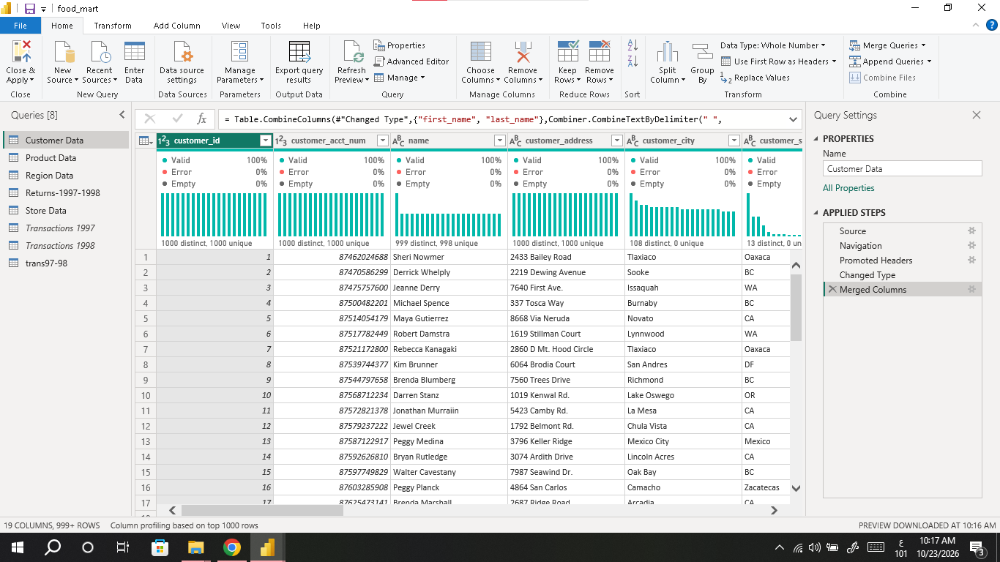
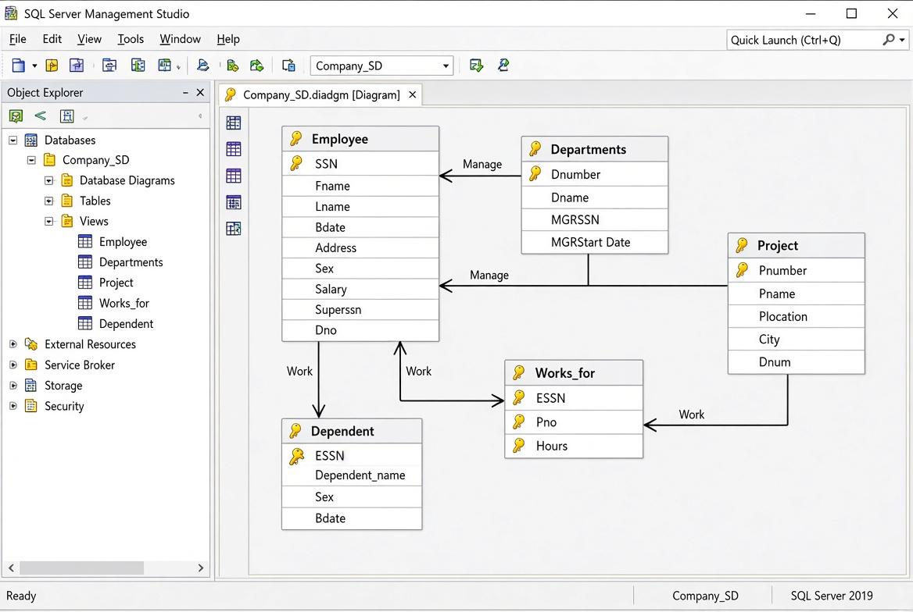
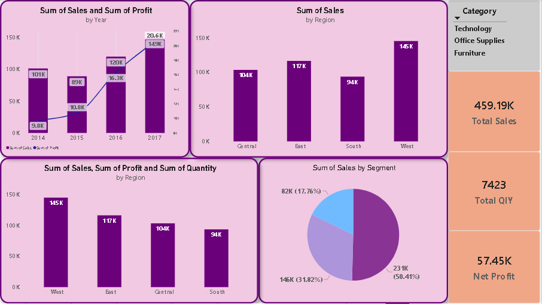

▦
Business Intelligence
Interactive reporting, KPI dashboards, business trend analysis.
I build reliable dashboards, validated KPIs, clean analytical datasets, and practical reporting solutions using Power BI, Excel, SQL, Python, and Microsoft Fabric.
CURRENT FOCUS
ABOUT ME
Have messy data and no clear answers? I help businesses and teams turn raw data into clean datasets, interactive dashboards, and KPIs they can trust, so decisions are based on facts, not guesses. You tell me the question; I handle the cleaning, analysis, and reporting and hand you files you can use right away.
I am a detail-oriented Data Analyst with a strong background in data modeling, SQL query optimization, and Business Intelligence solutions, with a focus on data quality, KPI validation, clear reporting, and stakeholder decision-making.
EDUCATION
Bachelor of Science in Computer Science & Information Technology
Expected Graduation: 2029SKILLS
Interactive reporting, KPI dashboards, business trend analysis.
Extraction, validation, relational schemas, and basic data modeling.
Data cleansing, transformation, and analytical workflows.
Power Query, advanced formulas, Pivot Tables, and dashboard reporting.
Dashboards and charts that make trends and KPIs easy to read.
ERD and mapping, data cleaning, validation, and version control.
EXPERIENCE
DATA ANALYSIS TRAINEE • SEP 2026 – PRESENT
Hands-on Data Analysis track covering ERD & mapping, SQL, Excel, Power BI, Tableau, and Python, with practical tasks on every tool.
DATA ANALYSIS TRAINEE
Designed dynamic Power BI dashboards, prepared and transformed business datasets with SQL and Python, validated KPIs, and applied basic data modeling using Microsoft Fabric and relational database platforms.
SERVICES
I am a detail-oriented Data Analyst with a solid background in Computer Science and Information Technology. I specialize in transforming complex raw data into clear, actionable business insights, interactive Power BI dashboards, and optimized SQL databases.
TECHNICAL CORE
Build interactive dashboards that highlight key trends and business performance.

Execute data cleaning, transformation, and validation pipelines for complex datasets.

Optimize SQL queries and construct relational database schemas to ensure data integrity.

Collaborate on defining and validating core KPIs to empower data-driven decision-making.

SELECTED WORK
Financial performance analysis focused on profitability metrics, customer trends, data validation, and interactive business reporting.
CASE STUDY
Raw financial data for 2020–2025 made profitability and customer trends hard to see.
Built relational schemas, cleaned and validated the data with SQL, and created an interactive Power BI report.
Clear visibility into profitability metrics and customer trends for strategic decisions.
Interactive Power BI dashboard analyzing total quantity sold across time, customer income groups, customers, and membership card types.
CASE STUDY
Sales data was split across many tables (customers, products, stores, transactions), so it was hard to see what drives quantity.
Cleaned and merged the tables in Power Query, then built a Power BI dashboard with a Total QTY KPI.
One view of 833K total quantity by time, income group, customer, and member card.
Relational database modeling and SQL work designed around normalized structures, efficient retrieval, and data integrity.
CASE STUDY
Unstructured data risks duplication and broken relationships between records.
Designed a normalized schema (ERD) in SQL Server and wrote efficient SQL queries.
Consistent data with integrity across tables and faster retrieval.
Superstore-based analysis using Power Query and Pivot Tables to explore sales, profitability, customer segments, regions, and monthly trends.
CASE STUDY
Raw Superstore data was hard for managers to read and compare by region or segment.
Cleaned it in Power Query and built Pivot Tables, slicers, and KPI cards.
A management dashboard showing 459.19K total sales and 57.45K net profit at a glance.
TESTIMONIALS
LET'S WORK TOGETHER
Send me your data and let's turn it into a clear business story.